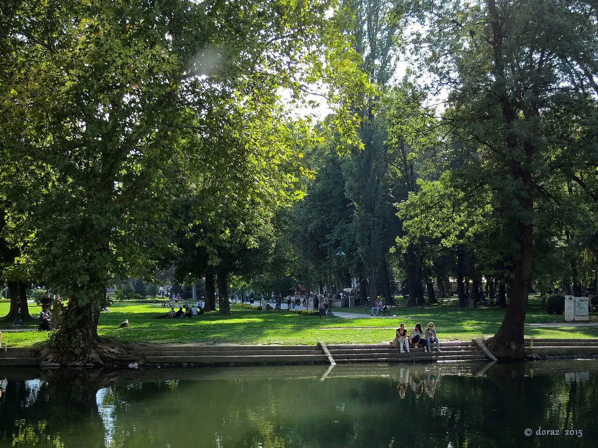
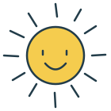

Недела без голем план
Не мора секој семеен ден да има агенда. Понекогаш се доволни шише вода, нешто за грицкање и едно „ајде надвор“.
Мали авантури, убави места и вистински приказни. Твојот семеен водич низ Скопје, со љубов и љубопитност.


Денес, малку надвор.Една прошетка. Илјада откритија.
Внимателно одбрани откритија од градот. За да ни бидат при рака.
Едукативниот оддел на МСУ има програми за различни групи. Контактирајте за соодветен формат.
МСУ · едукативни програмиИзложбениот центар Матка ја раскажува приказната за струјата. Посетата договорете ја однапред.
Изложбен центар Матка„Ѕвездички“ објавува фестивал од 22 до 26 октомври 2026. Програмата проверете ја кај организаторот.
Asterisks · официјална најаваПогледнете го градскиот регистар на услуги за семејна и дневна поддршка.
Град Скопје · регистарГо подготвуваме нашиот семеен журнал. Приказни од градот, мали водичи и страници што ќе ги чуваме долго откако ќе пораснеме.
Ѕирни во првиот број Пилот издание за читање и печатење дома. Печатен тираж во подготовка.